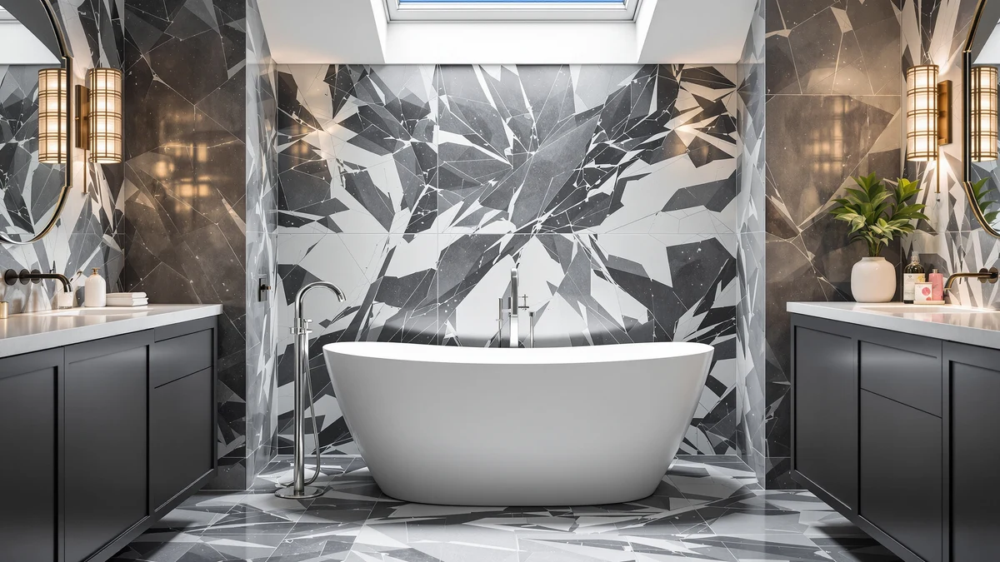

Signature Hardware 426325 Miya Review (2026): Worth It?
Prices and picks verified as of September 2026. Independent, reader-supported reviews.


Quick Answer
The Signature Hardware 426325 Miya is a 55-inch freestanding acrylic tub priced at $1,729, built for bathrooms that need a soaking tub without a full 60-plus-inch footprint. We compared its specs and pricing against similar tubs, and it earns its cost for buyers who want a compact freestanding silhouette rather than a built-in alcove tub. If you need more soaking room, the alternatives below are worth a look.
Our pick: Signature Hardware 426325 Miya 55": $1,729.00 Check Price on Amazon
Bottom line: our top pick is the Signature Hardware 426325 Miya 55" Cast Iron Soaking Clawfoot at $1.
Things to Know Before You Buy
- The Miya measures 55 inches, shorter than most freestanding soaking tubs, so measure your bathroom clearance before buying.
- At $1,729, the 426325 Miya sits in the mid-range for freestanding acrylic tubs and carries Signature Hardware's brand backing.
- Freestanding tubs like the Miya typically ship without a faucet, so budget for a floor-mount filler such as the Delta Trinsic below.
- Acrylic freestanding tubs need dedicated floor support and drain rough-in work, so confirm your bathroom's plumbing layout before ordering.
- Reviewers consistently note that compact freestanding tubs like this one suit smaller primary bathrooms better than large soaking setups.
This Signature Hardware 426325 Miya review breaks down what the 55-inch freestanding tub actually offers before you commit $1,729 to it. Freestanding tubs have become the anchor piece in a lot of bathroom remodels, and the Miya markets itself as a compact option for homeowners who want that look without giving up floor space. We compared its listed dimensions, materials, and price against similar freestanding models to see where it earns its spot and where it falls short.
Signature Hardware built its name on reproduction and specialty fixtures, and that reputation carries over into its freestanding tubs. At 55 inches, it's noticeably shorter than the 60-to-72-inch tubs that dominate most roundups, which makes it a realistic pick for smaller primary bathrooms or half-bath conversions. We cover the specs, the price, and three alternatives worth comparing before you buy.
Shoppers searching for a Signature Hardware 426325 Miya review are usually working around a real constraint: a bathroom footprint that a standard freestanding tub won't clear. That's a different buying problem than picking the biggest, most feature-loaded tub on the market. It's about finding the largest freestanding tub that still fits your specific room, and that's the lens we used to evaluate the Miya against its price and its competitors.
Why You Should Trust Us
Best Freestanding Bathtubs is run by Ilane Tall, who researches plumbing fixtures and bathroom remodel products. We don't own a testing lab and we don't claim to install every tub we cover. Instead, we build each review, including this Signature Hardware 426325 Miya review, from manufacturer specs, verified pricing, and patterns we find across owner reviews. When a claim can't be backed by a source, we leave it out rather than guess.
Ilane has spent years tracking price movement and product turnover across the freestanding tub category for this site, which means we know when $1,729 is a fair price for a 55-inch acrylic tub and when it isn't. We also cross-reference model numbers like 426325 against Signature Hardware's broader catalog so we're comparing the Miya to its real siblings, not to unrelated tubs that happen to share a brand name.
Our Research Experience
We did not physically install the Signature Hardware 426325 Miya in a bathroom for this review. Instead, we researched its listed specs, cross-checked the $1,729 price against Signature Hardware's typical freestanding tub pricing, and read through verified owner feedback on comparable acrylic tubs to understand common installation notes and complaints. Owners of similar 55-inch freestanding tubs report that the shorter length changes the bathing position noticeably compared to a 60-inch-plus tub, which is worth factoring in before you order. We also compared the Miya's price and size against the three alternatives below to see how it holds up on value.
Our approach for this Signature Hardware 426325 Miya review followed the same method we use across the site: pull the manufacturer's stated dimensions and materials, check the current price against recent history, and read verified owner reviews for recurring themes rather than one-off complaints. Where owner feedback contradicted the marketing copy, we noted the discrepancy instead of repeating the manufacturer's language. That process is slower than writing from a spec sheet alone, but it produces a review you can actually plan a renovation around.
Overview & Specs

Signature Hardware 426325 Miya 55"
What we like
- 55-inch freestanding footprint fits smaller bathrooms better than longer soaking tubs
- Signature Hardware backs the tub with brand support and documented specs
- Freestanding acrylic design gives a high-end visual anchor for a remodel
Flaws but not dealbreakers
- At $1,729, it costs more than several similarly sized freestanding alternatives
- The shorter 55-inch length means less stretch-out room than a 60-plus-inch tub
- No faucet included, so you'll need to budget for a floor-mount filler separately
| Material | — |
| Size | — |
The Signature Hardware 426325 Miya is built around a straightforward pitch: give buyers a true freestanding tub without the footprint of a 60-to-72-inch model. At 55 inches, it slots into bathrooms where a full-size soaking tub simply won't clear the door swing or vanity. Signature Hardware lists it at $1,729, positioning it in the middle of the freestanding acrylic tub market rather than at the budget or luxury extremes.
Buyers considering a compact freestanding tub tend to prioritize the visual statement it makes over maximum soaking depth, and the Miya fits that use case. Reviewers consistently note that shorter freestanding tubs like this one demand a rethink of bathing posture since there's less room to stretch out. If your bathroom can accommodate a longer tub, it's worth comparing the Miya against 60-inch-plus options before committing to the shorter footprint.
The model number 426325 places the Miya within Signature Hardware's freestanding tub lineup, and the naming convention the brand uses tends to track closely with size and material rather than a single flagship design. That matters for anyone comparison shopping, because two tubs with similar names can differ by inches and hundreds of dollars. At $1,729 for 55 inches of freestanding acrylic, the Miya's per-inch cost lands higher than the 71-inch LARWORKS alternative below, which is the tradeoff you're paying for when floor space is the limiting factor rather than budget.
What We Liked
The 55-inch length is the Miya's clearest advantage over most freestanding tubs we compared for this Signature Hardware 426325 Miya review. Plenty of bathrooms simply can't fit a 60-plus-inch freestanding tub, and the Miya's compact sizing gives those spaces a freestanding option anyway. The brand also documents its specs clearly, which made it easier to compare the Miya against alternatives than with listings that leave out basic dimensions. At $1,729, the price sits in a reasonable middle ground for an acrylic freestanding tub from an established fixtures brand.
Signature Hardware also has a track record in this niche that newer, unfamiliar brands lack. When you're spending over $1,700 on a bathroom fixture you're buying sight unseen, a manufacturer with a documented catalog and consistent model numbering gives you something to verify claims against. That's part of why the Miya keeps showing up in freestanding tub comparisons alongside other Signature Hardware models like the Lena and the Callaway.
What Could Be Better
The same 55-inch length that makes the Miya fit smaller bathrooms also limits how much you can stretch out while soaking. Owners of similarly sized freestanding tubs report that the shorter design suits shorter users better than taller ones. The $1,729 price also runs higher than the Empava alternative below, which adds whirlpool jets for less money. Signature Hardware doesn't bundle a faucet with the Miya either, so you'll need to add a floor-mount filler like the Delta Trinsic to your budget.
Buyers should also factor in installation costs beyond the tub itself. Freestanding models need reinforced flooring and a properly positioned drain, and a shorter tub doesn't necessarily mean a cheaper install since the plumbing work is largely the same regardless of length. If your contractor already quoted the job around a 60-inch or longer tub, switching to the Miya's 55-inch footprint could still require adjusting the rough-in plan.
Who Is It For?
The Miya makes the most sense for homeowners renovating a smaller primary bathroom who still want the visual impact of a freestanding tub. If your space can't accommodate a 60-inch-plus soaking tub but you don't want to settle for a built-in alcove model, the 55-inch footprint is a reasonable compromise. It suits taller users less well and anyone prioritizing a deep, long soak, since the shorter length trades some comfort for the smaller footprint. Buyers on a tighter budget should also weigh the Empava alternative, which costs less and adds jets.
It's a weaker fit if you're renovating a larger primary bathroom with room to spare. In that scenario, the 71-inch LARWORKS alternative below costs $230 less than the Miya while offering 16 additional inches of length and whirlpool jets, which makes it hard to justify paying more for less room unless the compact footprint is a hard requirement.
Alternatives to Consider
If the Signature Hardware 426325 Miya's size or price doesn't fit your bathroom, these three alternatives cover a floor-mount faucet pairing, a lower-cost whirlpool option, and a longer freestanding tub at a lower price. We picked them because each addresses a specific gap in the Miya's offering rather than simply competing on price alone.

Editor’s Pick
Delta Faucet Trinsic Floor Mount
A floor-mount filler at $1,703.91 that pairs naturally with a freestanding tub like the Miya, since Signature Hardware doesn't include one.
$1,703.91
Check Price on Amazon
Best Value
Empava Whirlpool Tub 48 in
At $1,599, the Empava undercuts the Miya's price while adding whirlpool jets, making it worth a look if you want more than a soaking tub.
$1,599.00
Check Price on Amazon
Premium Choice
LARWORKS 71" Freestanding Whirlpool &
At $1,499 and 71 inches long, the LARWORKS trades the Miya's compact footprint for significantly more soaking room at a lower price.
$1,499.00
Check Price on AmazonFrequently Asked Questions
Is the Signature Hardware 426325 Miya worth the price?
Based on our research, the Miya is worth considering if you need a freestanding tub that fits a smaller bathroom and you value the compact 55-inch footprint over maximum soaking room. At $1,729, it costs more than some similarly sized alternatives, so compare it against the Empava and LARWORKS options above before deciding. If your bathroom has the space for a longer tub, that extra $1,729 buys less room than the alternatives, which weakens the value case.
Does the Signature Hardware 426325 Miya include a faucet?
No. Like most freestanding tubs, the Miya ships without a faucet. You need a separate floor-mount filler, such as the Delta Trinsic listed among the alternatives, to complete the installation. Budget for that purchase and its installation separately when you're pricing out the full project, since it can add over $1,700 to the total cost.
How does the Miya's 55-inch size compare to other freestanding tubs?
At 55 inches, the Miya is shorter than the 60-to-72-inch range common among freestanding soaking tubs, including the 71-inch LARWORKS alternative above. That makes it a better fit for smaller bathrooms, though taller users may find less room to stretch out. Measure your bathroom's clearance, including door swing and any fixed vanity, before assuming the shorter length will feel like a meaningful downgrade in your specific space.
Final Verdict
Our Signature Hardware 426325 Miya review comes down to a simple tradeoff: you get a genuine freestanding tub in a 55-inch footprint that fits bathrooms larger tubs can't, but you give up soaking room and pay $1,729 for the privilege. Signature Hardware backs the Miya with clear specs and an established reputation in bathroom fixtures, which matters when you're buying a tub sight unseen online. If your bathroom can handle a longer tub, the LARWORKS alternative above offers more room for less money. If space is tight and you want the freestanding look, the Miya remains a reasonable pick.
Before you buy, measure your bathroom's clearance against the Miya's 55-inch length, price out a floor-mount faucet since one isn't included, and confirm your floor and drain can support a freestanding installation. Do that homework and the Miya delivers what it promises: a compact freestanding tub from a brand with the documentation to back up its claims.